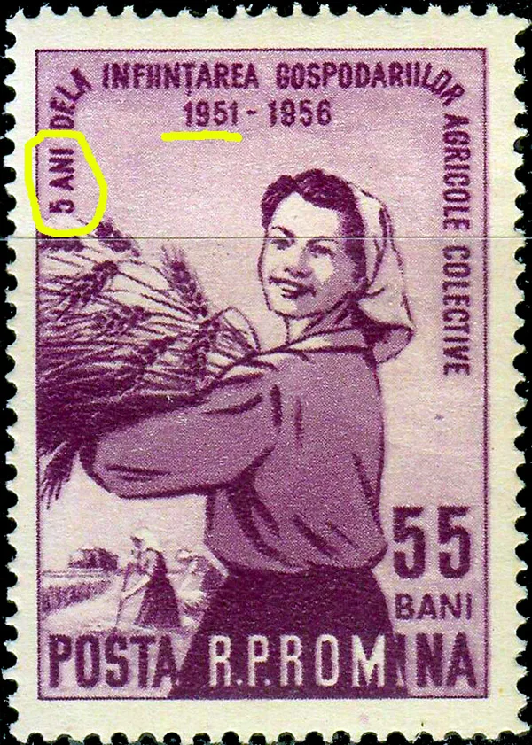
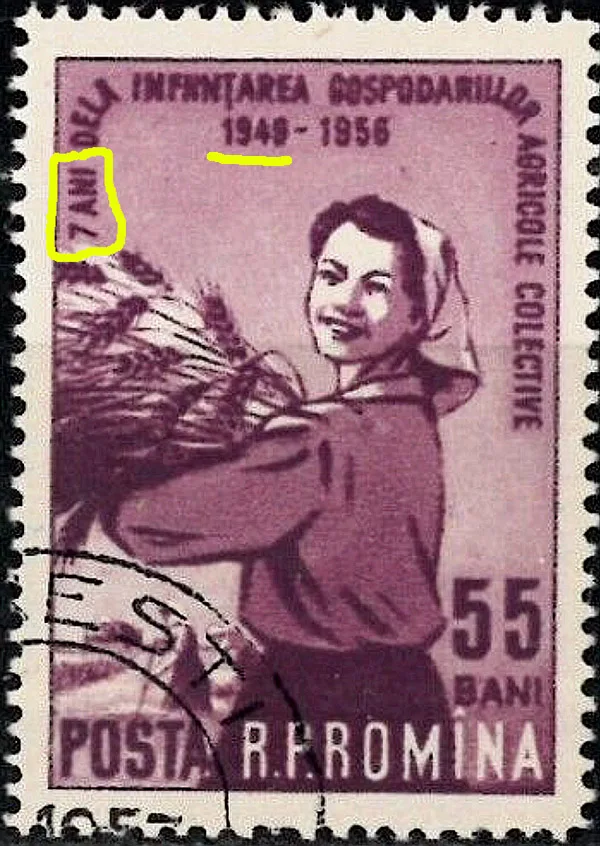
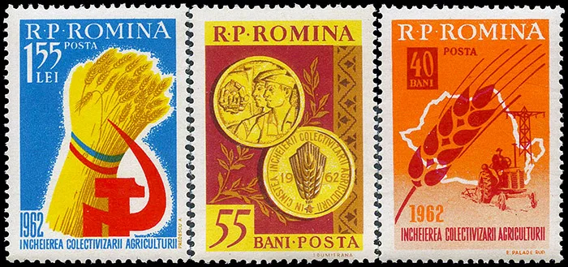
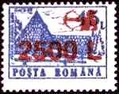
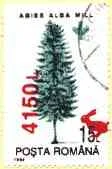
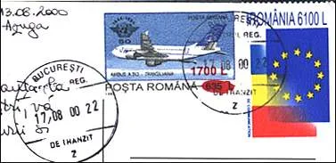
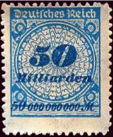
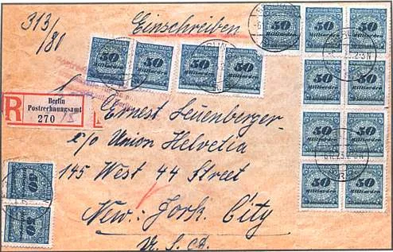

Home / Countries / Five Years Plans
Five Years Plans
From the original Art on Stamps archive
Below I show several stamps from the Five Year Plan set, issued by the Romanian Popular Republic in 1952. The Plan started actually in 1951 and it failed, like many other similar plans started in other communist countries. Other two stamps of the Five Year Plan set of 1952 are also quite interesting. The red 3 Lei value show an armed soldier and is labeled: "The army of the R.P.R. (Romanian Popular Republic) defends our peaceful work." One can ask what has it to do with a Five year plan, but if you will read below about the forced collectivization, you will understand the real role of the army. On the dark green 30 Lei stamp one can read: "In the 5 years there will be afforested 32 times more than in 1940." Normally one could expect that equal periods of time are taken in a comparison, because only one year could be less representative.

But not all of communist actions failed, unfortunately. For example on the green 7 Lei stamp (above, the first on the row) one can read: "In 1955 the socialist sector will prevail in the agriculture." The communist party officials, using the forces of the Securitate (Secret Police) and of the army, have imposed to the majority of farmers to join the so called "collective farm".
The stamp issued in 1956 and labeled "5 years from the founding of collective farms, 1951 - 1956" is one of the most interesting in the Romanian post - W.W.II philately. It was issued the July 23, 1956 and was withdrawn after a few days.

On October 18, 1956 it was replaced by a new stamp, marked "7 years of collective farms, 1949 - 1956". We show below a CTO where on the cancel can be read the year 1957. "5 ANI" on the first stamps means "5 years", and on the second one "7 ANI" means "7 years". The first was a huge mistake, that escaped the designer and the persons responsible (with their heads) for the correct labeling of stamps, strictly surveyed by the communist party and Securitate authorities. And nevertheless their propaganda blunders were printed and distributed!

On April 27, 1962 the Romanian P.A. issued a set of three stamps celebrating the full collectivization of the agriculture.


The results of the suicidal politics of the former Communist leaders and of some of their later followers can still be perceived much later, even on stamps. Take as an example the stamp displayed on the left (Sura Dacilor Lodge, Brasov, Scott 4219). True, it may look better in the overprinted version of 1998 than the original of 1991, but notice the inflation rate of over 5500%, and the quite suggestive image of the archer who tries, unsuccessfully, to hide the old value. My only objection to the design of the overprint is that the archer should be pointing much higher than the roof!

I present on the right an interesting combination of Romanian stamps, received on a postcard. The Airbus A-310 stamp was issued in 1994 and it was then overprinted with a dirigible airship, possible in the hope of a slow down of inflation. Control of inflation was a precondition set by the European Community for the countries that wished to join it, and, by chance, the stamp on the right shows the flags of Romania and of the EC.

And here an example for why one should fear a high inflation. The letter below was posted on December 6, 1923 from Germany, Berlin. It was correctly franked, for the destination New York City, U.S.A.. The total face value of all 15 stamps is of 15 x 50 billions = 750 billions! This extreme inflation was one of factors that facilitated the access to power in Germany of Hitler and of his Nazi Party.


Created: 1999. Revised: Jan. 31, 2024. Copyright © 1999 - 2024 by Victor Manta, Switzerland / USA. All rights reserved worldwide.